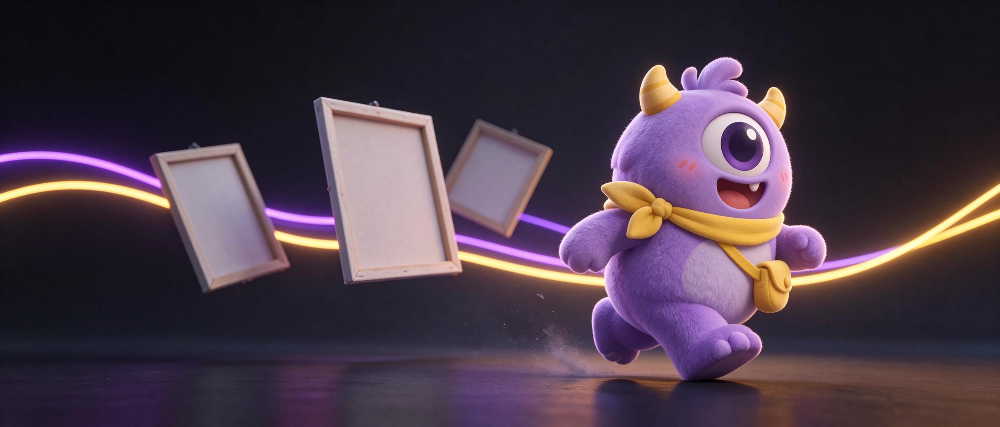

26件作品
05个方向
01持续生长的档案

精选作品横带 / SELECTED STRIP
按住拖动，或用 ← → 键
精选作品 / SELECTED
六件先看，再进目录慢慢翻。
从五个方向选出六件作品。完整的 26 件作品、按方向筛选与搜索，都在作品目录里。

精选作品横带 / SELECTED STRIP
按住拖动，或用 ← → 键
精选作品 / SELECTED
从五个方向选出六件作品。完整的 26 件作品、按方向筛选与搜索，都在作品目录里。